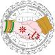
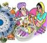
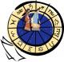
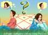

| वैवाहिक | |
|---|---|
 |
प्रेम विवाह - Love Marriage analysis through the Birth Chartप्रेम विवाह करने वाले लडके व लडकियों को एक-दुसरे को समझने के अधिक अवसर प्राप्त होते है. इसके फलस्वरुप दोनों एक-दूसरे की रुचि, स्वभाव व पसन्द-नापसन्द को अधिक कुशलता से समझ पाते है. प्रेम विवाह करने वाले वर-वधू भावनाओ व स्नेह की प्रगाढ डोर से बंधे होते है. ऎसे में जीवन की कठिन परिस्थितियों में भी दोनों का साथ बना रहता है. |
 |
विवाह समय निर्धारण - Calculating the time of marriage through Mahadashaपविवाह समय निर्धारण के लिये सबसे पहले कुण्डली में विवाह के योग देखे जाते है. इसके लिये सप्तम भाव, सप्तमेश व शुक्र से संबन्ध बनाने वाले ग्रहों का विश्लेषण किया जाता है. जन्म कुण्डली में जो भी ग्रह अशुभ या पापी ग्रह होकर इन ग्रहों से दृ्ष्टि, युति या स्थिति के प्रभाव से इन ग्रहों से संबन्ध बना रहा होता है. वह ग्रह विवाह में विलम्ब का कारण बन रहा होता है |
 |
विवाह के लिए प्रश्न कुण्डली में ग्रह स्थिति (The position of planets in the Prashna kundali)विवाह के लिए प्रश्न कुण्डली में सप्तम, द्वितीय और एकादश भाव को देखा जाता है.विवाह के कारक ग्रह के रूप में पुरूष की कुण्डली में शुक्र और चन्द्रमा (Venus are Moon are the karakas for marriage for males) को देखा जाता है जबकि स्त्री की कुण्डली में मंगल और सूर्य को देखा जाता है (Mars and Sun are marriage karakas for females) |
 |
प्रेम विवाह - Love Marriage analysis through the Birth Chartप्रेम विवाह करने वाले लडके व लडकियों को एक-दुसरे को समझने के अधिक अवसर प्राप्त होते है. इसके फलस्वरुप दोनों एक-दूसरे की रुचि, स्वभाव व पसन्द-नापसन्द को अधिक कुशलता से समझ पाते है. प्रेम विवाह करने वाले वर-वधू भावनाओ व स्नेह की प्रगाढ डोर से बंधे होते है. ऎसे में जीवन की कठिन परिस्थितियों में भी दोनों का साथ बना रहता है. |
प्रश्न ज्योतिष से विवाह का विचार - When I will get married - Horary Asrologyविवाह कब होगा इस प्रश्न का विचार करने के लिए द्वितीय, सप्तम, तथा एकादश भाव में कौन से ग्रह हैं इनको देखा जाता है (The second and the seventh house should be assessed for marriage.) |
|
 |
विवाह के तीन सूत्र ग्रह : गुरु, शुक्र व मंगल (Three keys to marriage astrology : Jupiter, Venus and Mars)जब किसी व्यक्ति की कुण्डली से दांपत्य का विचार किया जाता है, तो उसके लिये गुरु, शुक्र व मंगल का विश्लेषण किया जाता है. इन तीनों ग्रहों कि स्थिति को समझने के बाद ही व्यक्ति के दांपत्य जीवन के विषय में कुछ कहना सही रहता है. आईये यहां हम दाम्पत्य जीवन से जुडे तीन मुख्य ग्रहों को समझने का प्रयास करते है. |